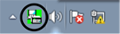

Příjem faxů do počítače
| Zobrazení nových zpráv PC-Fax |
- Klepněte na tlačítko Přijímat.
- Postupujte podle pokynů uvedených na obrazovce.
- Na hlavním panelu počítače se zobrazí ikona PC-Fax.
- Poklepejte na ikonu PC-Fax.
|
| Zobrazení nových zpráv PC-Fax |
|